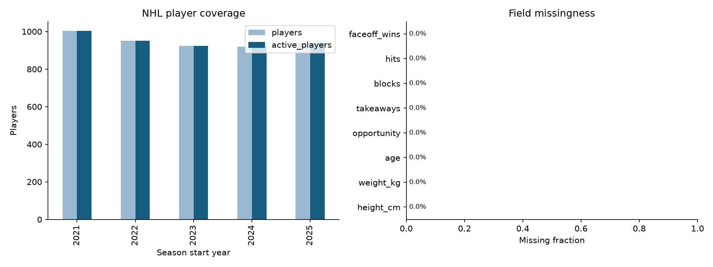
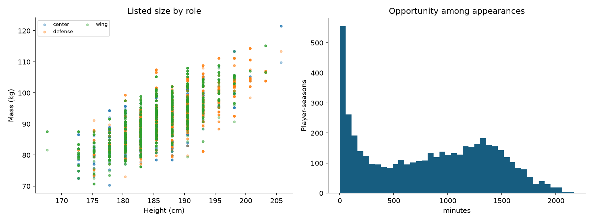
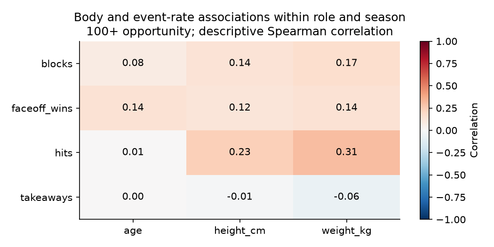

4,738 player-season rows · 1,480 athletes · [2021, 2022, 2023, 2024, 2025]
Role-specific event evidence, data coverage and uncertainty govern interpretation. Physical role similarity does not establish cross-sport success.



2024 selects the model; 2025 evaluates it. Forecasts exclude current physical listings. Baselines are retained when they perform better on validation.
| task | target | fold | model | selected_on_validation | n | brier | average_precision | mae | rmse | spearman | r2 |
|---|---|---|---|---|---|---|---|---|---|---|---|
| availability | any_opportunity | validation | prevalence | False | 924 | 0.134 | 0.842 | NaN | NaN | NaN | NaN |
| availability | any_opportunity | validation | logistic | True | 924 | 0.107 | 0.962 | NaN | NaN | NaN | NaN |
| availability | any_opportunity | test | prevalence | False | 920 | 0.122 | 0.860 | NaN | NaN | NaN | NaN |
| availability | any_opportunity | test | logistic | True | 920 | 0.104 | 0.967 | NaN | NaN | NaN | NaN |
| opportunity | opportunity | validation | persistence | True | 924 | NaN | NaN | 289.545 | 406.287 | 0.764 | 0.551 |
| opportunity | opportunity | validation | hurdle_ridge | False | 924 | NaN | NaN | 356.347 | 436.173 | 0.764 | 0.482 |
| opportunity | opportunity | test | persistence | True | 920 | NaN | NaN | 278.687 | 389.314 | 0.776 | 0.585 |
| opportunity | opportunity | test | hurdle_ridge | False | 920 | NaN | NaN | 350.376 | 430.381 | 0.779 | 0.492 |
| effectiveness_rate | takeaways | validation | role_mean | False | 778 | NaN | NaN | 1.038 | 1.290 | -0.006 | -1.305 |
| effectiveness_rate | takeaways | validation | persistence | False | 778 | NaN | NaN | 1.137 | 1.533 | 0.310 | -2.257 |
| effectiveness_rate | takeaways | validation | ridge | True | 778 | NaN | NaN | 0.942 | 1.193 | 0.224 | -0.974 |
| effectiveness_rate | takeaways | test | role_mean | False | 791 | NaN | NaN | 0.838 | 1.094 | 0.117 | -0.531 |
| effectiveness_rate | takeaways | test | persistence | False | 791 | NaN | NaN | 0.722 | 1.261 | 0.288 | -1.034 |
| effectiveness_rate | takeaways | test | ridge | True | 791 | NaN | NaN | 0.648 | 0.930 | 0.303 | -0.106 |
| total_contribution_count | takeaways | test | selected_rate_x_expected_opportunity | NaN | 920 | NaN | NaN | 6.647 | 8.704 | 0.744 | 0.395 |
| total_contribution_count | takeaways | test | prior_count | NaN | 920 | NaN | NaN | 6.252 | 8.561 | 0.722 | 0.415 |
| effectiveness_rate | blocks | validation | role_mean | False | 778 | NaN | NaN | 1.566 | 2.142 | 0.657 | 0.425 |
| effectiveness_rate | blocks | validation | persistence | False | 778 | NaN | NaN | 1.491 | 2.490 | 0.739 | 0.222 |
| effectiveness_rate | blocks | validation | ridge | True | 778 | NaN | NaN | 1.376 | 2.346 | 0.796 | 0.310 |
| effectiveness_rate | blocks | test | role_mean | False | 791 | NaN | NaN | 1.655 | 2.244 | 0.614 | 0.373 |
| effectiveness_rate | blocks | test | persistence | False | 791 | NaN | NaN | 1.479 | 2.386 | 0.722 | 0.291 |
| effectiveness_rate | blocks | test | ridge | True | 791 | NaN | NaN | 1.357 | 2.121 | 0.769 | 0.440 |
| total_contribution_count | blocks | test | selected_rate_x_expected_opportunity | NaN | 920 | NaN | NaN | 16.559 | 24.424 | 0.736 | 0.612 |
| total_contribution_count | blocks | test | prior_count | NaN | 920 | NaN | NaN | 16.972 | 25.685 | 0.735 | 0.571 |
| effectiveness_rate | hits | validation | role_mean | False | 778 | NaN | NaN | 5.759 | 7.866 | 0.232 | 0.058 |
| effectiveness_rate | hits | validation | persistence | True | 778 | NaN | NaN | 3.021 | 5.236 | 0.830 | 0.583 |
| effectiveness_rate | hits | validation | ridge | False | 778 | NaN | NaN | 4.879 | 19.371 | 0.823 | -4.714 |
| effectiveness_rate | hits | test | role_mean | False | 791 | NaN | NaN | 5.883 | 8.095 | 0.229 | 0.060 |
| effectiveness_rate | hits | test | persistence | True | 791 | NaN | NaN | 2.687 | 4.552 | 0.844 | 0.703 |
| effectiveness_rate | hits | test | ridge | False | 791 | NaN | NaN | 3.875 | 11.462 | 0.853 | -0.885 |
| total_contribution_count | hits | test | selected_rate_x_expected_opportunity | NaN | 920 | NaN | NaN | 25.699 | 38.649 | 0.715 | 0.553 |
| total_contribution_count | hits | test | prior_count | NaN | 920 | NaN | NaN | 25.699 | 38.649 | 0.715 | 0.553 |
| effectiveness_rate | faceoff_wins | validation | role_mean | False | 778 | NaN | NaN | 6.497 | 11.085 | 0.836 | 0.454 |
| effectiveness_rate | faceoff_wins | validation | persistence | True | 778 | NaN | NaN | 2.704 | 5.818 | 0.903 | 0.849 |
| effectiveness_rate | faceoff_wins | validation | ridge | False | 778 | NaN | NaN | 4.371 | 10.029 | 0.892 | 0.553 |
| effectiveness_rate | faceoff_wins | test | role_mean | False | 791 | NaN | NaN | 6.592 | 11.262 | 0.857 | 0.479 |
| effectiveness_rate | faceoff_wins | test | persistence | True | 791 | NaN | NaN | 2.793 | 5.962 | 0.910 | 0.854 |
| effectiveness_rate | faceoff_wins | test | ridge | False | 791 | NaN | NaN | 4.642 | 10.814 | 0.896 | 0.520 |
| total_contribution_count | faceoff_wins | test | selected_rate_x_expected_opportunity | NaN | 920 | NaN | NaN | 32.447 | 74.533 | 0.850 | 0.806 |
| total_contribution_count | faceoff_wins | test | prior_count | NaN | 920 | NaN | NaN | 32.447 | 74.533 | 0.850 | 0.806 |